Introducción
En este proyecto, exploraremos cómo configurar y utilizar Google Analytics y Google Search Console. Estas herramientas esenciales proporcionan datos valiosos sobre el tráfico y rendimiento de tu sitio web, permitiéndote optimizar tu estrategia de SEO y mejorar la visibilidad en los motores de búsqueda.
Configuración y características Google Search Console
Accedemos a Google Search Console e iniciamos sesión.
Una vez iniciamos sesión introducimos la URL de nuestra web que queremos analizar.
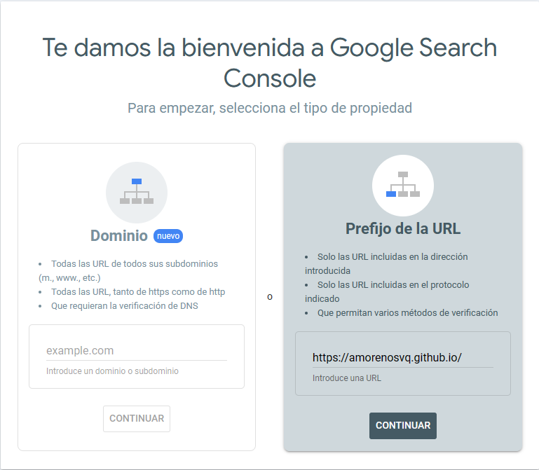 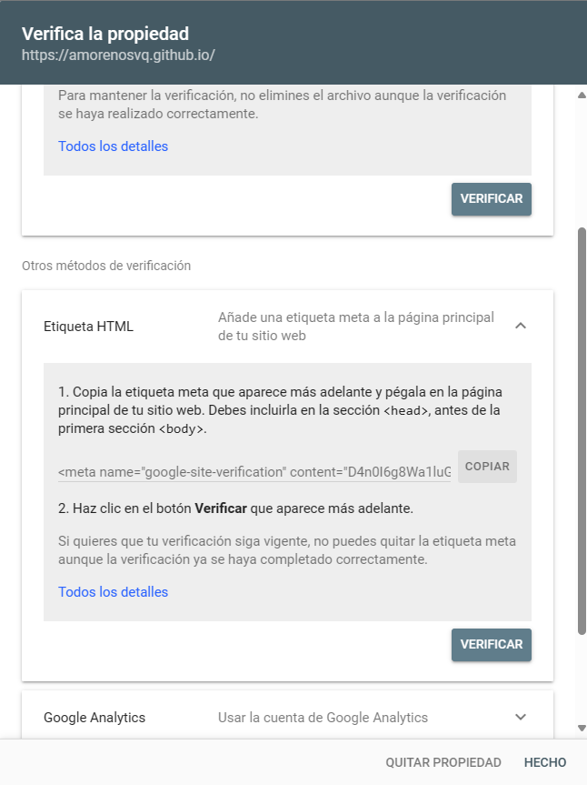Para poder realizar el seguimiento de nuestra web tenemos que introducir una etiqueta meta y verificar la propiedad.
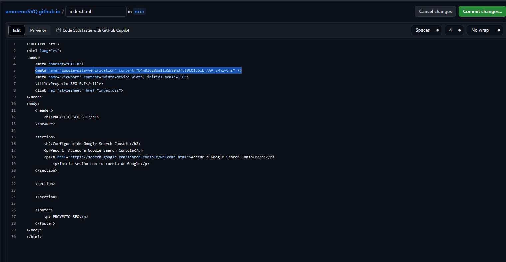Verificamos que hemos insertado correctamente el código de seguimiento.
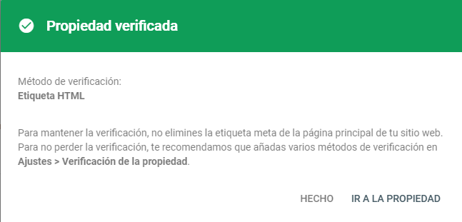Propiedad verificada.
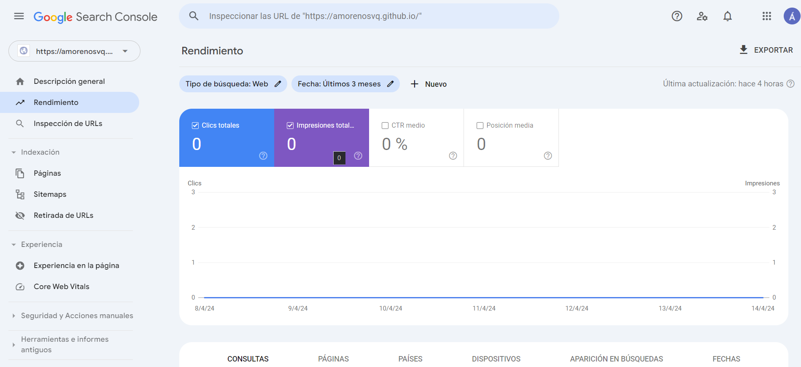Tiene que transcurrir hasta 48 horas para que empiece a recopilar datos y mostrarlos, una vez transcurrido ese tiempo la web de inicio se nos mostrará de esta manera.
Las principales características son:
- Rastreo e Indexación:Permite monitorear cómo Google rastrea e indexa tu sitio web, identificando qué páginas están incluidas en el índice de búsqueda y cuáles están excluidas.
- Análisis de Búsqueda:Ofrece datos sobre cómo los usuarios encuentran tu sitio en los resultados de búsqueda de Google, incluyendo las consultas de búsqueda que generan clics y las impresiones de tu sitio.
- Problemas de IndexaciónDetecta y notifica sobre problemas de indexación, como errores de rastreo, páginas no indexadas y problemas de etiquetado.
- Optimización de Contenido:Proporciona sugerencias para mejorar el rendimiento de tu contenido en los resultados de búsqueda, como oportunidades para palabras clave, meta descripciones y títulos de página.
- Seguridad del Sitio:Alerta sobre cualquier problema de seguridad que Google detecte en tu sitio, como malware o páginas hackeadas.
Configuración y características Google Analytics
Accedemos a Google Analytics e iniciamos sesión. Creamos una propiedad para la medición de datos de nuestra web, tenemos que configurar varios aspectos de nuestra “empresa” al ser una prueba me los invento.
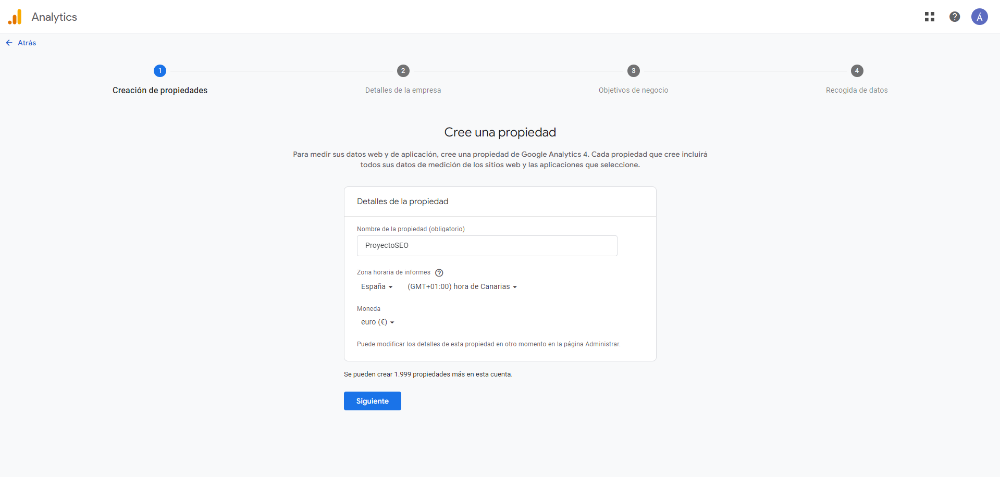 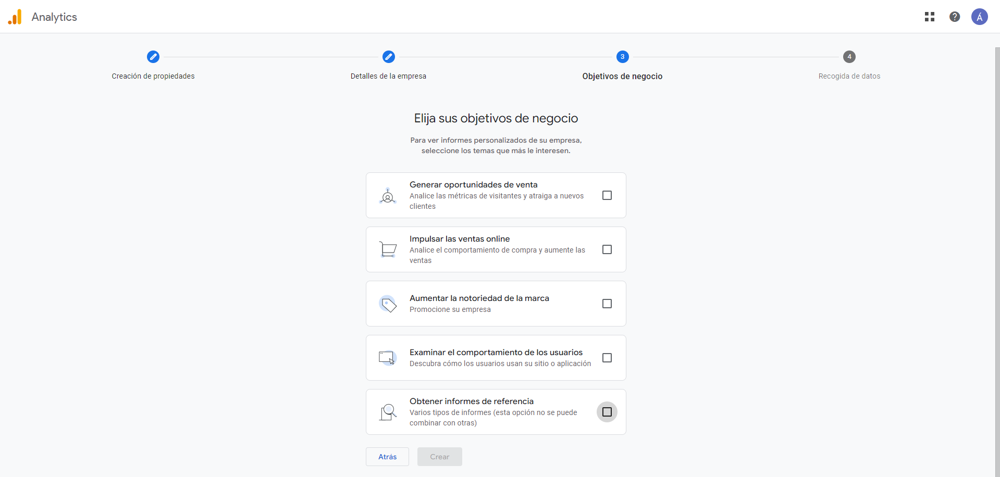Debemos de configurar un nuevo flujo de datos, voy a insertar manualmente en el head el código de seguimiento.
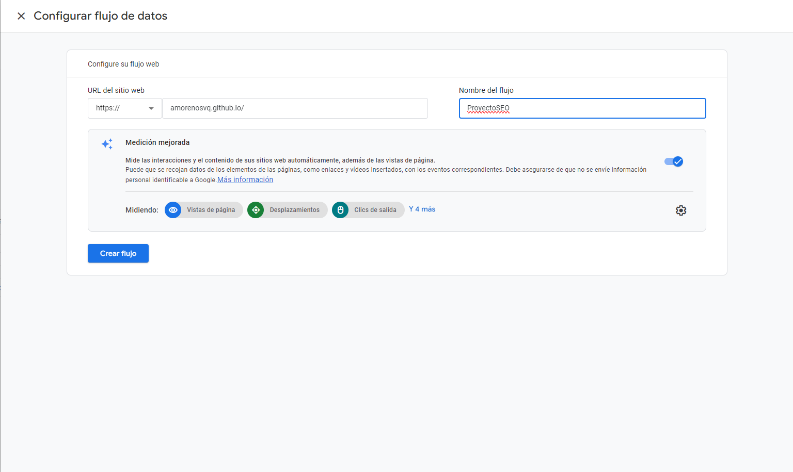 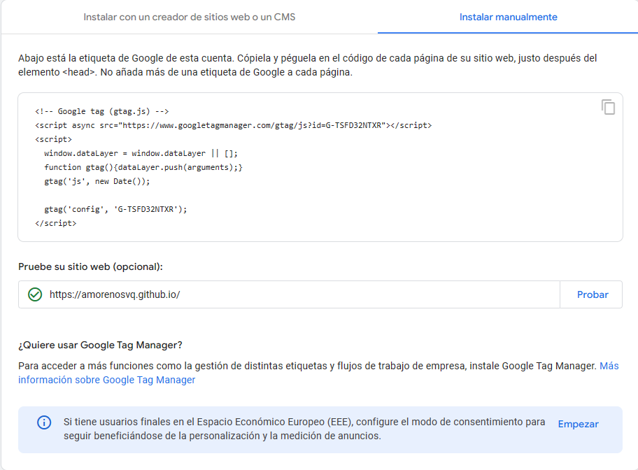Aquí vemos como queda nuestro .html donde he integrado el código de seguimiento
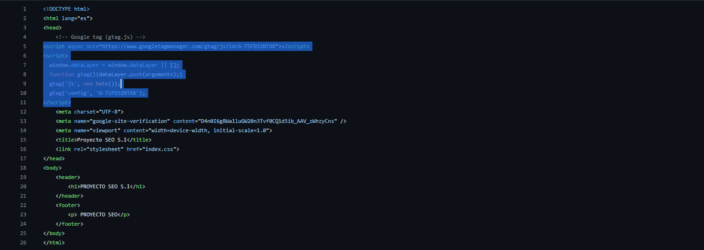Después de 48 horas ya nos empieza a generar los informes y datos que muestran la actividad de los usuarios en nuestra web.
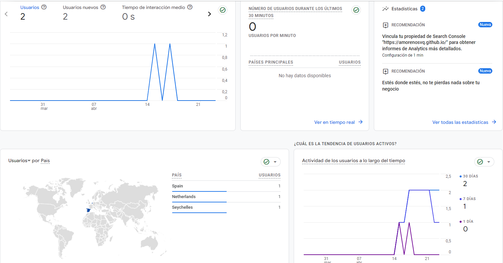Las principales características son:
- Análisis del tráfico del sitio web:Te muestra quiénes visitan tu sitio, cuántas páginas ven y cuánto tiempo pasan en él. Puedes ver de dónde vienen tus visitantes, qué dispositivos utilizan y cómo llegaron a tu sitio.
- Datos demográficos y de intereses:Te brinda información sobre la edad, género e intereses de tus visitantes. Puedes usar estos datos para dirigir tu estrategia de marketing de manera más efectiva.
- Rastreo de acciones del usuarioTe permite ver el proceso que siguen tus visitantes desde que llegan a tu sitio hasta que realizan una acción deseada, como una compra. Identifica dónde abandonan los visitantes, por si tienes que mejorar algo.
- Integración con otras plataformas de Google:Se conecta fácilmente con otras herramientas de Google, como Google Ads y Google Data Studio. Esto te permite obtener un análisis más completo y personalizado de tu sitio y tus campañas de marketing.